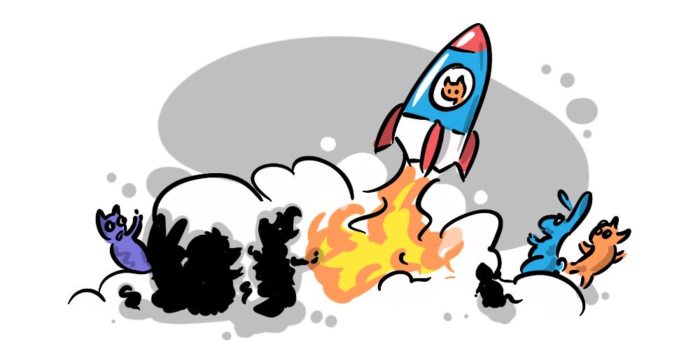

What am I doing here?
This is the
how? -> what?">
So, as an experiment, I have tried to distill the project of this site to fit this pattern… it was difficult, and revealing about what actually drives me (I recommend doing it yourself, you might be surprised what you find)
I want to live in a world where everyone is mentally and physically thriving—human well-being is the main driver for me.
But we live in a world where many people, through no fault of their own, are not doing well. The world is not fair, and this motivates me to work towards greater fairness where I can.

I believe by increasing fairness we actually spur on progress, by allowing everyone to reach their potential so that together we can not just survive but thrive—we can be greater than the sum of our parts.
Growth and progress is not possible with a zero-sum mentality, where my win is your loss or where individual gain comes at the expense of the collective, it’s a mathematical impossibility. We make progress when we work together with trust, when our individual aims serve the collective, and when the collective serves our individual aims, in a positive feedback loop.
Humanity (along with all the growing systems on top of which it is built) progresses through the accumulation of mutual benefits, non-zero or win-win games. Thankfully, our world is full of these.
NonZeroSum.games is a guide to finding and designing these win-win games in real life. We publish essays, illustrations, and playable simulations that show how to escape zero-sum traps, how to build positive feedback loops, and why fair rules unlock potential so more people can become their best selves—contributing to a thriving world.
What I realised through this process was that I am driven by forces that, while not exactly opposed, live in tension with each other: fairness and progress. I, like many people a have a natural intuition that fairness is right, but I also want humanity to progress. I am no misanthrope, in fact I’m an anthrophile, I think humans are great, but I think we are a long way from perfect, and if we don’t pursue progress, there are many regressive forces around that will drive us backwards.
But progress often seems at odds with fairness, we are told that in a capitalist world, we must tolerate inequality in order to spur on growth, that the brilliance of some individuals comes at the cost of the masses.
But I think this is exactly backwards, the best and brightest in society thrive when those around them are thriving, the forces of ignorance and the detriments of poverty do nothing to help cancer research for instance, in fact having a more ignorant, desperate public leads to political forces that drive funding away from those brilliant minds that might unlock human flourishing—like crabs in a bucket.

Having a level playing field where children are given an equal chance to thrive means we can discover the lost Einsteins of the next generation. And at the same time provide a fairer world for all, which is a worthwhile end in itself. So, fairness and progress are not at odds—and the point at which they align is exactly where non-zero-sum games play out:
- A more educated public → is more likely to support medical research → which leads to a healthier public
- A level playing field → leads to discovering lost Einsteins → who contribute breakthroughs benefiting everyone
… the list goes on and on…
Following Sinek's formula, I've actually discovered for myself why I want to focus on understanding non-zero-sum games and advocate for them—because they are the mechanism that enables both progress and fairness, which is the only way to make a material difference to human well-being.
The model that occurred to me was walking. A zero-sum approach says that for the right leg to go forward the left must go back, so the body ends up in the same place. But, as we all know, it is entirely possible to walk forward, by one step building on the last.